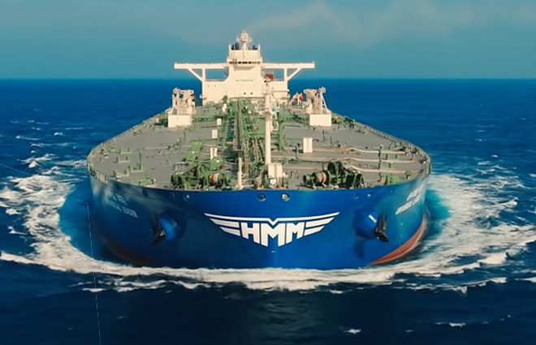

home > 사업영역 > 벌크
벌크
원자재와 원유, 플랜트등 상품 특성에 맞는 물류 서비스를 제공합니다

- 벌크 사업
- 3만톤의소형 선박부터 30만톤의 대형 선박까지 다양한 벌크선을 갖추어 전 세계로 화물을 수송하고 있습니다. 탱커 사업의 경우 초대형유조선(VLCC), 석유제품선, LNG선 등을 운영중이며 국내외 정유사들과의 장기운송계약을 기반으로 전세계 원유를 수송하며 영업경쟁력을 지속적으로 향상시키도록 노력하고있습니다
- 드라이벌크 사업의 경우 중동 건설현장으로의 자재 운송을 시작으로 세계 주요 제철소, 전략회사, 원료 공급 회사와의 협력을 통해 철광석, 석탄, 곡물 그리고 다양한 벌크화물 등의 해상 운송 서비스를 제공하고 있습니다.
회사 태동의 주역으로서 최고의 영업경쟁력으로 글로벌 최상의 서비스를 제공
- 원유선
- 1976년 3월, 263,500 DWT의 Korea Sun호 등 3척의 VLCC로 서비스를 시작한 이래 VLCC 및 Suezmax 선형을 근간으로 중동 및 서아프리카에서 극동, 미국, 유럽으로 원유 운송 서비스를 제공하고 있습니다. 국내외 우량 정유사(S-Oil, GS Caltex, SK Energy, Hyundai Oilbank, Petron, Unipec, Reliance 등)와의 영업 기반으로 글로벌 최상의 경쟁력을 확보하고 있습니다. HMM 원유선, 결정의 순간에 제일 먼저 떠오르는 최고의 선택입니다.
- 선박 정보 보기
| Size | Name | Built | Dwt | Hull |
|---|---|---|---|---|
| VLCC | Universal Leader | 2019 | 300,000 | D/H |
| Universal Winner | 2019 | 300,000 | D/H | |
| Universal Partner | 2019 | 300,000 | D/H | |
| Universal Creator | 2019 | 300,000 | D/H | |
| Universal Victor | 2019 | 300,000 | D/H | |
| Suezmax | Dimitris | 2011 | 158,000 | D/H |
| Spyros | 2011 | 158,000 | D/H |
- 제품선
- 50,000 DWT MR 탱커를 근간으로 주요 고객사인 글로벌 정유사, 석유화학사 및 상사들의 Gasoline, Gas Oil, Naphtha, Jet Fuel, Kerosene 등 제품유(CPP) 운송 서비스를 제공하고 있습니다. 오랜 기간 축적된 영업 및 선박 운항 노하우를 바탕으로 시장 내에서 독보적인 입지를 구축하였으며, 중국과 인도 등 신흥경제권의 수요 증가 및 2020년 이후 IMO 차원의 환경규제 강화에 따른 물동량 증가를 사전에 대비하여 아시아 최고의 제품선 운용 선사가 되도록 하겠습니다.
- 선박 정보 보기
| Size | Name | Built | Dwt | Hull |
|---|---|---|---|---|
| MR | Oriental Diamond | 2008 | 50,781 | IMO III |
| Oriental Gold | 2008 | 50,375 | IMO III |
지난 40여년간 안정적인 정기선 서비스를 통한 대한민국 수출 운송의 주역
- 정기선
- 회사 초창기인 1977년 9월 청룡 1, 2, 3호 등 원양예인선단을 취항시켜 중동 건설현장까지 자재 운송을 수행했던데서 벌크정기선 서비스가 태동하게 되었습니다. 30,000 DWT Handy ~ 60,000 DWT Supramax급 선박을 정기적으로 투입하여 선적항인 한국, 중국, 대만, 일본 및 동남아에서 양하항인 미주, 중남미, 중동 및 유럽으로 다양한 항로를 운용하여 국내외 철강사, 종합상사 등의 철강제품과 목제품, 일반 잡화 등을 운송하고 있습니다
지난 40년 동안 대한민국의 경제성장과 함께했던 것을 자랑스럽게 생각하며, 앞으로도 변함없는 모습을 보여드리겠습니다
철광석 및 석탄 등 기간산업 화물 운송을 통한 세계 경제 성장의 견인차 역할
- Cape
- 사선 및 용선 Cape선(100,000 DWT 이상)을 투입하여 철광석 및 석탄 등 벌크 대량화물의 운송 서비스를 제공하고 있으며 국내외 공급사, 제철소와 발전사 등 우량 고객사와 신뢰에 기반한 긴밀한 관계를 구축하고 있습니다. 사선과 장/단기 용선선박의 선대 재편 및 확충을 통해서 수익 창출을 위한 선대 최적화를 도모하고 전문화된 영업/운항 인력을 육성하여 고객사에 최상의 서비스와 최고의 만족도를 제공하고 있습니다
- 선박 정보 보기
| Size | Name | Built | Dwt | Hull |
|---|---|---|---|---|
| VLCC | Hyundai Pioneer | 2009 | 207,955 | Bulk Carrier |
| Hyundai Pioneer | 2009 | 207,955 | Bulk Carrier | |
| Hyundai Atlantic | 2012 | 206,650 | Bulk Carrier | |
| FEG Success | 2010 | 182,619 | Bulk Carrier | |
| Global Trust | 2012 | 179,407 | Bulk Carrier | |
| Global Talent | 2012 | 179,407 | Bulk Carrier | |
| Global Enterpriser | 2010 | 176,939 | Bulk Carrier |
- Panamax
- Panamax선(76,000~82,000 DWT)을 투입하여 주요 원자재인 석탄, 곡물, 인광석 등의 해상운송 서비스를 제공하고 있습니다. 국내 화주뿐만 아니라 해외 주요 화주들과도 긴밀한 영업 네트워크를 유지하고 있으며, 싱가포르, 중국, 호주 및 유럽내 주재원 네트워크를 통해 시장을 지속적으로 넓혀가고 있습니다. 원가경쟁력을 갖춘 선대 추가 확보, 서비스 항로 다양화 및 고객사 신규개발과 더불어 전문화된 영업/운항 인력을 육성하여 고객들에게 최상의 서비스와 최고의 만족도를 제공하고 있습니다.
- 선박 정보 보기
| Size | Name | Built | Dwt | Hull |
|---|---|---|---|---|
| Kamsarmax | Mondial Iris | 2017 | 81,630 | Bulk Carrier |
| Mondial Success | 2017 | 82,010 | Bulk Carrier | |
| Mondial Sun | 2019 | 82,000 | Bulk Carrier | |
| Panamax | Ultra Panache | 2011 | 78,000 | Bulk Carrier |
- Supramax/Handy
- 28,000 DWT Handy ~ 60,000 DWT Supramax급 다양한 선형의 사선과 용선 선대를 운영하고 있으며, 선령 평균 5년 이내의 최신예 선박들로 선대가 구성되어 있습니다. 기존 우량 고객사들과의 유대관계 증진을 통한 영업 안정성 도모와 더불어 주재원 조직 등 전세계에 구축된 광범위한 영업망을 가용하여 영업 고객층을 대폭 넓혀오고 있습니다. 또한, 기존 아시아 수역에 집중했던 영업지역 일변도를 탈피하여 대서양 및 북미 지역으로의 비중 증대를 도모하고 있습니다.
- 선박 정보 보기
| Size | Name | Built | Dwt | Hull |
|---|---|---|---|---|
| Supramax | Pacific Ace | 2012 | 59,963 | Bulk Carrier |
| Pacific Pride | 2012 | 59,963 | Bulk Carrier | |
| Pacific Hero | 2012 | 58,912 | Bulk Carrier | |
| Pacific Honor | 2011 | 58,912 | Bulk Carrier | |
| Pacific Talent | 2013 | 56,578 | Bulk Carrier | |
| Pacific Dream | 2013 | 56,531 | Bulk Carrier | |
| Pacific Bright | 2013 | 56,512 | Bulk Carrier | |
| Pacific Vision | 2013 | 56,425 | Bulk Carrier | |
| Pacific Integrity | 2013 | 56,100 | Bulk Carrier | |
| Handy | Pacific Island | 2012 | 38,218 | Bulk Carrier |
| Pacific Hope | 2011 | 28,200 | Bulk Carrier | |
| Pacific Noble | 2012 | 28,198 | Bulk Carrier |